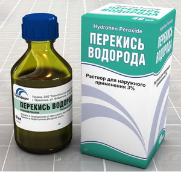
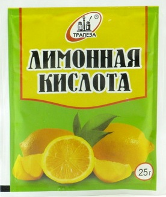
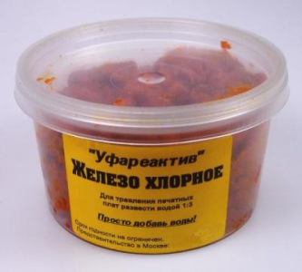
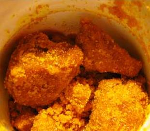
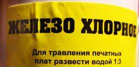
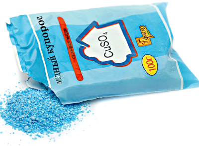

Растворы для травления печатных плат
Таблица 1
| Наименование раствора | Состав | Количество | Технология приготовления | Достоинства | Недостатки |
|---|---|---|---|---|---|
| Перекись водорода + лимонная кислота | Перекись водорода (H2O2) |
100 мл | В 3% растворе перекиси водорода растворить лимонную кислоту и поваренную соль | Доступность компонентов, высокая скорость травления, безопасность | Не хранится |
| Лимонная кислота (C6H8O7) |
30 г | ||||
| Поваренная соль (NaCl) |
5 г | ||||
| Водный раствор хлорного железа | Вода (H2O) |
300 мл | В теплой воде растворить хлорное железо | Достаточная скорость травления, повторное использование | Невысокая доступность хлорного железа |
| Хлорное железо (FeCl3) |
100 г | ||||
| Перекись водорода + соляная кислота | Перекись водорода (H2O2) |
200 мл | В 3% раствор перекиси водорода влить 10% соляную кислоту | Высокая скорость травления, повторное использование | Требуется высокая аккуратность |
| Соляная кислота (HCl) |
200 мл | ||||
| Водный раствор медного купороса | Вода (H2O) |
500 мл | В горячей воде (50-80°С) растворить поваренную соль, а затем медный купорос | Доступность компонентов | Ядовитость медного купороса и медленное травление, до 4 часов |
| Медный купорос (CuSO4) |
50 г | ||||
| Поваренная соль (NaCl) |
100 г | ||||
Травить печатные платы в металлической посуде не допускается. Для этого нужно использовать емкость из стекла, керамики или пластика. Утилизировать отработанный травильный раствор допускается в канализацию.
Травильный раствор из перекиси водорода и лимонной кислоты
- 3%-ый раствор перекиси водорода 100 г.
- Лимонная кислота 80-100 г.
- Чайная ложка поваренной соли.
Раствор на основе перекиси водорода с растворенной в ней лимонной кислотой является самым безопасным, доступным и быстро работающим.


Рис. 1 - Перекись водорода и лимонная кислота
Перекись водорода можно приобрести в любой аптеке. Продается в виде жидкого 3% раствора или таблеток под названием гидроперит. Для получения жидкого 3% раствора перекиси водорода из гидроперита нужно в 100 мл воды растворить 6 таблеток весом 1,5 г.
Лимонная кислота в виде кристаллов продается в любом продуктовом магазине, расфасованная в пакетиках весом 30 или 50 грамм. Поваренная соль найдется в любом доме. Лимонную кислоту можно заменить уксусной, но из-за ее едкого запаха травить печатную плату придется на открытом воздухе.
Смешаем все вместе, никакой опасной реакции не будет, далее хорошенько перемешиваем деревянной или пластмассовой палочкой до полного растворения твердых ингредиентов. Плата полностью травится максимально за 1,5 часа, а в итоге никаких вредных газов не выделяется, но советую травить на свежем воздухе, поскольку запах все-же есть. 100 мл травильного раствора хватит на удаление медной фольги толщиной 35 мкм с печатной платы площадью 100 см2.Отработанный раствор не хранится и повторному использованию не подлежит.
Травильный раствор на основе хлорного железа
Травильный раствор не требователен к температуре, травит достаточно быстро, но скорость травления снижается по мере расходования хлорного железа в растворе.
Хлорное железо очень гигроскопично и поэтому из воздуха быстро впитывает воду. В результате на дне банки появляется желтая жидкость. Это не влияет на качество компонента и такое хлорное железо пригодно для приготовления травильного раствора.
Если использованный раствор хлорного железа хранить в герметичной таре, то его можно использовать многократно. Подлежит регенерации, достаточно в раствор насыпать железных гвоздей (они сразу покроются рыхлым слоем меди). При попадании на любые поверхности оставляет трудноудаляемые желтые пятна. В настоящее время раствор хлорного железа для изготовления печатных плат применяют реже в связи с его дороговизной.
В 200 мл теплой воды (35-40°C) растворяют 150 грамм хлорного железа в порошке. Время травления зависит от концентрации раствора и его нагрева. Ускорить процес можно также добавлением в раствор хлорного железа 10-30% соляной кислоты.



Рис. 2 - Хлорное железо
Если нет хлорного железа в готовом виде (в порошке), то его можно приготовить самому. Для этого необходимо иметь 9%-ную соляную кислоту и мелкие железные опилки. На 25 объемных частей кислоты берут одну часть железных опилок. Опилки засыпают в открытый сосуд с кислотой и оставляют на несколько дней. По окончании реакции раствор становится светло-зеленого цвета, а через 5—6 дней окраска меняется на желто-бурую - раствор хлорного железа готов к применению.
Для приготовления хлорного железа можно использовать порошкообразный железный сурик. При этом на одну объемную часть концентрированной соляной кислоты требуется 1,5—2 части сурика. Компоненты смешивают в стеклянной посуде, добавляя сурик небольшими порциями. После прекращения химической реакции на дно выпадает осадок и раствор хлорного железа. Готов к применению
Травильный раствор на основе перекиси водорода и соляной кислоты
Отличный травильный раствор, обеспечивает высокую скорость травления. Соляную кислоту при интенсивном помешивании вливают в 3% водный раствор перекиси водорода тоненькой струйкой. Вливать перекись водорода в кислоту недопустимо! Но из-за наличия в травильном растворе соляной кислоты при травлении платы нужно соблюдать большую осторожность, так как раствор разъедает кожу рук и портит все, на что попадает. По этой причине травильный раствор с соляной кислотой в домашних условиях использовать не рекомендуется.
Для форсированного травления (4-6 минут) используют следующий состав (в массовых частях):
- 38 процентная соляная кислота (плотность 1,19 г/см),
- 18-ти процентная (медицинская) перекись водорода (пергидроль).
Сначала смешивают 40 частей воды и 40 частей перекиси водорода, затем добавляют 20 частей кислоты. Рисунок платы наносят кислостойкой краской типа НЦ-11.
Травильный раствор на основе медного купороса
Раствор нужно готовить в следующей последовательности:
- наливаете в ванночку горячую воду (250 мл, 80°C),
- насыпаете поваренную соль (две столовые ложки на стакан воды) и размешиваете до растворения,
- добавляете медный купорос (одна столовая ложка на стакан воды) и размешиваете до растворения.
Размешивать нужно неметаллическим предметом - пластмассовой или стеклянной палочкой.
Раствор приобретает темно-зеленую окраску. Готов к применению сразу после остывания (при термостойкой краске необязательно).
Раствора хватает для снятия 200 см3 фольги. Время травления при комнатной температуре - 8-10 часов. Если рисунок печатной платы выполнен достаточно теплостойкой краской или лаком, температуру раствора можно довести примерно до 50°C, и тогда интенсивность травления увеличится.
Травление происходит в поваренной соли, а медный купорос выступает в качестве катализатора.
Заранее приготавливать сухую смесь медного купороса и поваренной соли не допускается: сначала нужно растворить один компонент, а потом другой.

Рис. 3 - Медный купорос
Травильный раствор на основе серной кислоты и перекиси водорода.
В стакане холодной воды растворяют 4-6 таблеток перекиси водорода и осторожно добавляют 15-25 мл концентрированной серной кислоты. Время травления платы в данном растворе примерно 1 час при комнатной температуре. Для нанесения рисунка печатной платы на фольгированный материал можно пользоваться клеем БФ-2.
Раствор хромового ангидрида.
В 1 литре горячей воды (60-70°C) растворяют 350 г хромового ангидрида и добавляют 50 г поваренной соли. После того как раствор остынет приступают к травлению. Время травления от 20 до 60 минут. Процесс можно ускорить, если добавить в раствор 50 г концентрированной серной кислоты.
Водный раствор азотной кислоты.
В зависимости от концентрации кислоты время травления может варьироваться от 2 минут до 1 часа.
Раствор персульфат натрия
Персульфат натрия (natriumpersulfat) - белый кристаллический порошок. В 0,5 литра теплой воды засыпают 250 грамм персульфата натрия и размешивают до полного растворения. Раствор готов к использованию. В процессе реакции замещения раствор желательно держать в нагретом состоянии (35-50°C).
Источники
frompinskto.wordpress.com - Способы травления печатных плат
exersizze.ru - Сравнение растворов для травления печатных плат
radiostorage.net - Способы самостоятельного травления печатных плат